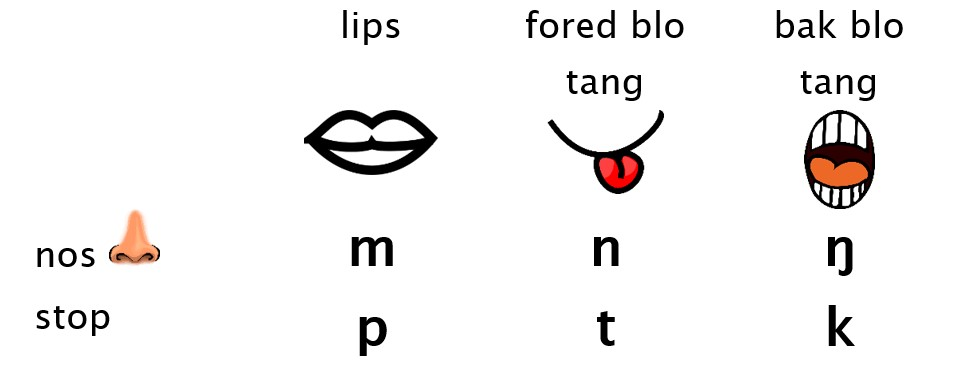

Saon mo speling
- Seksen 1: Introdaksen
-
Seksen 2: Ol konsonant
- Seksen 2.1: Ol stop
- Seksen 2.2: Ol konsonant blong nos
- Seksen 2.3: Ol stap blo nos
-
Seksen 2.4: Ol friksen konsonant
- Seksen 2.4.1: Ol difren rod blo talem v
- Seksen 2.4.2: Ol difren rod blo talem x
- Seksen 2.5: Tufala konsonant l mo r
- Seksen 2.6: Samari blong ol konsonant saon
- Seksen 2.7: Ol dabol konsonant
-
Seksen 3: Ol vaol
- Seksen 3.1: Nambasiks vaol æ
- Seksen 3.2: Ol longfala vaol
- Seksen 3.3: Ol vaol mo ol glaed
1 Introdaksen
Japta ia bae i tokabaot ol saon blo Vatlongos, mo sam tingting lo saed blo hao blo raetem ol saon blo Vatlongos.
Japta ia bae i gat fulap toktok we i aot lo eria blo linguistics we oli talemaot ‘phonology’. Bae mi traem yusum Bislama we i posibol, be samtaem bae mi mas yusum sam toktok blo Inglis mo linguistics, mo bae mi traem explenem gud.
Tufala toktok we oli impoten blo toktok lo saon hemi consonant mo vowel. Ol consonants oli ol saon we yu blokem air lo maot blo yu. Mo ol vowels oli ol saon we ea i jas kamaot nomo – yu stap jenisem sep blo hem witem maot mo tang blo yu, be yu no blokem hem.
Tu bae yumi yusum wan special alphabet we ol linguist i talemaot ‘International Phonetic Alphabet’ (IPA). Sipos yu save ol symbol ia, bae yu andastandem gud ol saon blo evri lanwis lo wol. Taem we mi raetem wan leta insaed lo ol /slash/ o [skwea bracket], hemi minim se hemi wan IPA symbol.
Bae yumi tokbaoat ol consonant festaem, afta ol vowel, mo soemaot from wanem oli ol difdifren saon lo Vatlongos. Neks bae yumi tokabaot ol saon blo Bislama mo Inglis we i save kam insaed lo Vatlongos, mo laswan bae yumi tokabaot hao ol saon i save kam tugeta insaed lo ol syllable, we hemi olsem wan bit insaed lo lanwis.
2 Ol konsonant
Vatlongos hemi gat 15 saon we oli ol konsonant.
Konsonant hemi gat wan mining lo linguistik we i minim ol saon we yu blokem o ristriktem ol ea flo we i kamaot lo maot blo yu.
I gat ol difren kaen consonant we yumi mekem wetem difren stael, mo lo difren ples blo maot.
2.1 Ol stop
Bae yumi stat wetem /p/ /t/ /k/ from trifala ia yumi mekem lo sem fasin nomo: yumi stopem ea wantaem, afta yumi lego air bakagen mo taem we yumi lego air bakagen, i mekem wan bigfala saon wantaem.
Traem talem /p/ be putum han blo yu lo fored blo fes blo yu. Bae yu harem se i no gat ea, afta bigfala air i kamaot wantaem nomo. Lo English mifala talem se ol saon ia ‘stop consonants’.
Tri saon ia i difren nomo lo ples lo maot we yumi stopem air olsem. /p/ yumi stopem air lo tufala lips blo yumi. /t/ yu stapem air lo fored lo tang. Mo /k/ yu stapem air lo bak blo tang blo yu, antap lo ruf blo maot blo yu.
Traem mekem trifala naoia mo harem se lips mo tang blo yu i stap wea taem we yu mekem.
Blo raetem trifala saon ia i isi nomo from ol saon ia klosap i semak lo Bislama mo English tu, mo yumi save yusum ol sem leta nomo: <p> <t> <k>. From spelling system blo English i no gud tumas, samtaem bae yu luk saon ia /k/ oli raetem <c>. Sam samting i difren smol lo Vatlongos. Samtaem we yumi talem /t/, yumi putum fored blo tang blo yumi i tajem bihaen lo tut blo yumi, be fulap taem lo English ol man oli putum fored blo tang blo olgeta antap lo ruf blo maot bihaen lo ol tut. Mi no mekem tumas risoj lo ol difrens olsem yet be mi hop se bae mi mekem sam risoj olsem lo fuja.
| Sound | Letter | Examples |
|---|---|---|
| p | p | pat, sap, lasuppang, taappin |
| t | t | tei, pat, ketteh, lutteong |
| k | k | kaakau, xiak, mikkas, kokkorong |
2.2 Ol konsonant blong nos
Section ia bae i tokabaot tri difren consonant bakagen, /m/ /n/ /ŋ/ (symbol ia /ŋ/ hemi wan symbol blo International Phonetic Alphabet we ol linguist oli stap yusum blo soemaot evri saon we hemi posibol lo evri lanwis lo world, be nomali yumi raetem
Ol saon ia klosap i semak lo /p/ /t/ /k/ we yumi lanem las wik: yu stopem air we i go lo maot lo yu lo sem ples nomo: /m/ yu stopem wetem lips blo yu olsem /p/, /n/ yu stapem wetem fored blo tang blo yu olsem /t/, mo /ŋ/ yu stapem wetem bak blo tang blo yu olsem /k/. Traem talem /t/, /n/, /t/, /n/, bae yu harem se tang blo yu i stap muv lo sem fasin evritaem.
Difrens hemi wanem we yu mekem wetem nose blo yu: taem we yu blokem ea lo maot, yu letemaot ea lo nos blo yu wantaem. I gat wan samting we i stap insaed lo maot blo yu bihaen lo ruf blo maot we yu save openem blo letem ea i pas tru lo nose wantaem.

Wan samting bakagen we i difren smol hemi se taem we yumi mekem ol saon blo nose ia, oli ol ‘voiced’ saon. Mining blo ‘voice’ lo linguistics, hemi se yumi mekem se voesbokis we i stap lo nek blo yumi i stap vaebreit o seksek. Sipos yu putum han blo yu lo nek blo yu mo mekem saon /p/, bae yu no harem wan samting, be sipos yu mekem saon ia /m/ (mo traem mekem se i longwan lelbet, olsem mmmm….), bae yu harem se i muvmuv smol lo nek. Lo linguistics mifala singaotem samting ia ‘voicing’, mo yumi save divaedem ol saon lo voiced sounds mo voiceless sounds.
Blo raetem ol saon ia tu i no had tumas, from ol saon ia i stap lo Bislama mo English tu, we yumi raetem <m>, <n>, <ng>. Advantej blo raetem olsem hemi se sipos ol pikinini i lanem Vatlongos fastaem, bae hemi isi blo olgeta blo gohed witem Bislama mo English, mo bae oli no konfus lo saon ia.
Wan samting nomo we sam man i no laekem, hemi se yumi yusum tufala leta wantaem <n> wetem <g> blo raetem wan saon nomo /ŋ/. Saon ia hemi no /n/ afta /g/, hemi wan saon nomo we yu mekem lo nose blo yu olsem /n/, be wetem bak blo tang blo yu olsem /g/. From we samtaem man i wantem holtaet lo rul ia se yu sud gat wan leta blo wan saon, ol man lo Fiji mo fulap narafala ples lo Pacific, oli raetem saon ia witem <q>, from olgeta mo yumi no stap yusum leta ia <q> lo alphabet blo yumi. Mi ting se bae yumi holtaet lo spelling ia <ng>, be sipos fulap blo yufala wantem jenisem i go lo <q> hem tu i posibol.
| Saon | Leta | Eksampol |
|---|---|---|
| m | m | mahis, mahulong, xamem, ammei |
| n | n | ni, nahou, bien, nannemi, nasepinni |
| ŋ | ng | nganak, ang, eising, mingngel |
Ating yumi saonem ol saon ia klosap i semak lo English nomo, be wan samting we hemi difren, hemi se lo English yu no save putum saon ia /ŋ/ lo fored blo word o syllable, i mas kam bihaen nomo. Hemi wan rison we ol man we oli toktok English oli mestem fulap taem lo Vatlongos mo Bislama. I mekem se i isi lo man we i save English blo talem eising ‘klos’ be i had blo talem nganak ‘hemia’.
2.3 Ol stap blo nos
Lo seksen ia bae mi tokabaot 3 consonants ia /mb/ /nd/ /ŋɡ/.
Ol saon ia klosap i olsem ol stop (/p/ /t/ /k/) we yumi tokabaot finis. Yumi blokem ea lo maot lo ol sem ples nomo, afta yu letemaot ea blo mekem wan bigfala saon. Be mein difrens hemi se yumi putum wan smol saon olsem ol saon blo nos (/m/ /n/ /ŋ/) i kam bifo lo hem. Ol saon ia i stat witem wan saon blo nos we yumi mekem lo sem ples nomo lo stop we i kam bihaen: lips o fored lo tang o bihaen lo tang. Lo linguistics mifala i singaotem ol saon olsem ‘prenasalised stops’.
Taem we saon ia i folem wan vowel (e.g. /a/ in /landa/ ‘oli stap’), hemi isi nomo blo harem saon blo nos lo stat blo ol saon ia. Be taem we i folem wan consonant, saon blo nos i sot lelbet (e.g. /latnda/ ‘oli stap (sam man nomo)’), mo taem we yu statem wan sentence o toktok lo saon ia, samtaem yumi lego stat blo ol saon ia, o yumi mekem se hemi kwaet tumas. e.g. sipos mi talem /ndi napol/ ‘mi stap wok!’, samtaem i saon olsem di napol nomo.
Wan samting bakagen we i difren lo ol saon ia sipos yu komparem lo ol stop nomo /p/ /t/ /k/, hemi se ol saon ia oli voiced. Yumi bin tokabaot voicing las wik taem we yumi tokabaot ol saon blo nos. Sipos yu holem nek blo yu mo talem /mb/ /nd/ /ŋɡ/, bae yu harem se voicebox lo nek nomo bae i stap muvmuv lelbet olsem vibration. Be sipos yu talem /p/ /t/ /k/ bae i no gat. Lo English, i gat sam saon /b/ /d/ /g/ we klosap i semak lo /p/ /t/ /k/, be difrens nomo hemi se i gat voicing lo ol saon ia. Be blo yumi lo Vatlongos i no gat saon /b/ /d/ /g/ we i simple saon nomo, i mas gat saon blo nos witem evritaem: /mb/ /nd/ /ŋɡ/.
Blo raetem ol saon ia i gat sam debate i stap lo hem. From we yumi no gat separate saon blo /b/ /d/ /g/ lo Vatlongos, yumi save yusum trifala letter ia <b> <d> <g> blo raetem trifala saon ia /mb/ /nd/ /ŋɡ/. Hemi stret lo ideal rule we ol linguist i talem lo wan spelling system, se bae i gat wan saon lo wan leta. Olsem i gud from i soemaot se ol saon ia i wan saon nomo lo Vatlongos: i no olsem manggo lo Bislama (mo Inglis tu), we saon olsem i kamaot lo tu difren saon: /ŋ/ <ng>, afta /g/, <g>.
Be sam man bae oli wantem raetem ol saon ia <mb> <nd> <ngg> blo soemaot strong se yu mas talem saon blo nos lo stat blo ol saon ia. Tingting ia tu i gud from ating i mo klosap lo Bislama mo English taem we pikinini i gohed blo lan blo rid mo raet lo Bislama mo English (be English spelling i no gud nating lo problem ia from fulap taem i spelem /ŋɡ/ i olsem /ŋ/ nomo, e.ɡ. finger i luk olsem singer be saon i difren). Problem nomo se i mekem se yumi usum 2 or 3 letter blo wan saon nomo lo Vatlongos, mo hemi gat wan implication se /b/ /d/ /g/ i ol separate simple saon, be Vatlongos i no gat ol saon olsem.
Insaed lo wok we mi bin mekem finis mi bin yusum <b> <d> <g> nomo. Taem we yumi mekem wan poll long 2020 hemi klos lelbet, be mo man i vot blo yusum <mb> <nd> <ngg>. Be mi luk se lo Baebol long Vatlongos nomali oli yusum <b> <d> <g> nomo, mo taem we mi luk raeting blong fulap yangfala long projek blo ol yangfala lo 2023, fulap oli yusum <b> <d> <g> nomo. So naoia bae mi gohed blo yusum <b> <d> <g> nomo, be mi save se hemi wan kwestun yet we hemi stap lo ol manples nomo blo mekem joes blo yufala taem we yu stap raet lo Vatlongos!
| Sound | Letter | Examples |
|---|---|---|
| ᵐb | b, mb | ba, barang, teben |
| ⁿd | d, nd | di, doxol, dup, redemien |
| ᵑɡ | g, ngg | gur, gehik, igak |
2.4 Ol friksen konsonant
Lo seksen ia bae mi tokabaot fo consonants we oli /v/ /s/ /x/ /h/.
Ol saon ia i difren lo ol stop we yumi lukluk finis, from yu no blokem ea lo maot blo yu wantaem. Yu no blokem, be klosap bae yu blokem nomo, mekem se ea i fasfas lo maot blo yu mo i gat wan saon taem we ea i traem kamaot sloslo nomo. Hemi olsem yu gat wan balon, mo yu mekem smolsmol hol lo hem wetem wan pin, bae yu harem sam noes we ea i traehad blo kamaot lo balon ia be i mas kam sloslo nomo from hol i smol tumas. Rison blo saon ia hemi friction, mekem se nem blo ol saon olsem lo linguistics hemi fricatives.
/v/ yu save mekem witem lips blo yu, olsem /p/ /b/ /ᵐb/ we yumi lanem finis. Taem we yu mekem witem lips nomo, i gat wan difren symbol blo hem lo linguistics we hemi [β]. Ating pronunciation ia hemi mo klosap lo haonao ol pupu i bin talem saon ia fastaem. Wan narafala rod blo talem saon ia hemi mo olsem /v/ lo Bislama mo English – yu yusum bottom lip blo yu witem ol top tut blo yu. Wan narafala rod bakagen we hemi interesting tumas hemi se yu yusum top tut, bottom lip mo top lip tu. Mi no save stret sipos i tru se man i stap mekem saon ia olsem yet, be Gary J. Parker we hemi mekem wok witem sam man Mele Maat mo Southeast Ambrym lo 1968 mo 1969, hemi talemaot se samtaem man i mekem saon ia olsem. Man ia hemi sik from, from i no gat tumas narafala lanwis lo world we oli mekem wan saon olsem. From we i gat fulap rod blo mekem saon ia /v/, yu save lukluk lo seksen long hem wan.
Saon ia /s/ yu mekem wetem fored blo tang blo yu, olsem, /t/, /ⁿd/, /n/. Yu putum antap lo maot blo yu mo letem smol ea i kamaot nomo, mekem wan saon olsem hissing. Saon ia hemi voiceless, minim se voicebox blo yu i no muvmuv.
Saon ia /x/ yu mekem wetem baksaed blo tang blo yu, olsem, /k/, /ᵑg/, /ŋ/. Nomali yu mekem olsem wan friction saon olsem /v/ mo /s/, be samtaem man i save yusum uvular, we hemi samting ia we i stap hang antap lo bak blo maot blo yu. Mi no save stret nem blo samting ia lo lanwis – sipos yu save yu talemaot! Taem we yu yusum uvular blo mekem saon ia, yu mekem se i kam antap afta go daon, antap afta go daon, mo yu mekem hariap we i hariap olsem wan vibration. From lo /x/ tu i gat fulap difren rod blo mekem, bae mi mekem wan post blo hem afta lo neks wik tu. Hemia wan saon we i nogat lo Bislama o English.
Saon ia /h/ hem tu hemi wan fricative, be yu mekem hem lo voesbokis blo yu wantaem we hemi insaed lo throat blo yu. Sipos yu traem talem /h/ naoia, bae yu harem se maot blo yu i open wantaem – tang mo lips blo yu i no klosap bae i blokem nating. Hemia from we yu mekem insaed lo nek blo yu wantaem, we i had blo lukluk o harem. Saon ia tu hemi voiceless, from voicebox blo yu i stap mekem saon ia nomo, i no save muvmuv wantaem.
Blo raetem ol saon ia, <s> mo <h> i isi nomo from i semak lo Bislama mo English nomo. Blo raetem /v/ yumi save yusum <v>, be mi luk samtaem man i stap yusum <f>, <p> o <w>. Ating ol difren speling ia i soemaot sam difren rod blo talemaot saon ia we bae mi tokabaot lo neks wik. Blo raetem /x/, mi luk se i gud blo yusum <x> nomo from yumi no yusum letter ia <x> blo eni narafala saon, mo fulap taem ol linguist mo ol man we oli toktok narafala lanwis lo Pacific oli yusum <x> blo saon ia. Be mi luk samtaem man i raetem olsem <kh> o <gh>, ating from we i olsem /h/ be lo bak blo tang nomo olsem /k/ mo /g/.
| Saon | Leta | Eksampol |
|---|---|---|
| v, β | v | venu, vahe, tuvava |
| s | s | sap, bos, eas, tassen, messe |
| x | x | xale, xil, sexien, taxiak |
| h | h | horamue, leh, vahe, kakah |
Wan samting we i difren blo saon ia /h/ lo lanwis taem yu lukluk lo English, hemi se lo English saon ia /h/ hemi no save stap lo en blo wan word o syllable, be lo Vatlongos hemi stap lo en blo word o syllable fulap taem.
2.4.1 Ol difren rod blo talem v
Saon ia /v/ mi bin talem finis se i gat sam difren rod blo talem:
1) [v] we hemi olsem Bislama mo English: yu yusum top tut blo yu witem bottom lip blo mekem
2) [β] we yu yusum tufala lip blo yu nomo
3) wan narafala saon bakagen we hemi very rare lo ol lanwis blo world: yu yusum top tut witem tufala lips blo yu.
Saon 2 mo 3 samtaem bae yu harem klosap i olsem [w], mekem se samtaem mi luk man i raetem saon ia witem letter <w>.
Trifala saon ia i no gat rule lo hem, i jas stap lo wanwan man lo wanwan taem se i mekem olsem wanem.
Be i gat wan nara saon blo hem we hemi [p]:
4) [p] we yumi lukluk finis (Seksen 2.1), yu yusum tufala lips blo yu (olsem [β]) be yu no mekem wetem friksen, be yu mekem olsem wan stop nomo: yu blokem ea bihaen lo lips blo yu afta yu letemaot wantaem nomo.
Be saon ia [p] hemi kamaot nomo taem we /v/ hemi stap lo en blo wan wod o silabol.
Wan example hemi lo word ia: naduva, we mining blo hem hemi ‘mi sutum’. Word ia i gat wan suffix lo hem: na-nduv-a, we -a i minim olsem ‘hem’, or sipos bae yumi translatem lo English ‘I shot it’. I minim se i gat wan samting we mi sutum, mo suffix ia -a i wok olsem wan pronoun.
Be sipos mi wantem talemaot se hemi wan pijin we mi bin sutum, bae mas karemaot -a: nandup tumen. Naoia yu luk se /v/ i saon olsem [p]. Hemi from we yumi karemaot -a mekem se naoia [v] i stap lo en blo word wantaem.
Be rule ia hemi no evritaem – mi luk se sam olfala, especially lo Endu, oli no jenjem, oli jas talem /v/ nomo, olsem nanduv tumen. From we olgeta olsem ia oli talem /v/ evritaem, yumi save luk se sam word we klosap evritaem ol narafala man i talem olsem [p], rili lo taem bifo saon ia hemi /v/, be yumi bin lusum saon lo en blo word mekem se i kam [p]. Wan example hemi sup ‘chief’, we sam olfala oli talem olsem suv.
Samting ia hemi wan narafala decision we yumi mas mekem lo saed blo speling. Sipos yumi wantem raetem word ia duv lo sem spelling evritaem (olsem nduva), mo soemaot history blo word olsem suv ‘chief’, bae yumi raetem /v/ witem <v> evritaem. Lo linguistics mifala i talemaot se wan spelling sistem olsem hemi ‘deep’, from hemi soemaot strakja o histori blo lanwis we hemi dip, hemi no stap antap lo sefis blo ol saon we yumi harem.
Be sipos yumi wantem se evritaem we yumi mekem saon ia [p] spelling i semak nomo, bae yumi raetem dup mo sup. Ating speling olsem bae i mo klia lo ol pikinini taem oli stap lan blo rid lo hem. Lo linguistics mifala talemaot se sistem olsem hemi ‘shallow’, from we hemi soemaot ol saon olsem we yumi talemaot nomo.
| saon | leta | eksampol |
|---|---|---|
| v, β, [p] | v, p | venu, vahe, tuvava, duva, dup |
| p | p | pat, sap, lasuppang, taappin |
2.4.2 Ol difren rod blo talem x
Yumi luk finis se saon ia /x/ hemi wan saon we yu mekem wetem friction lo bak blo tang blo yu. Be /x/ hemi wan saon we yumi gat fulap difren rod blo talem.
1) velar fricative [x] – hemi minim se yu putum bak blo tang blo yu klosap lo ruf blo maot we i sopsop lelbet. Samtaem yu save mekem voiced velar fricative [ɣ], taem we yu mekem voicebox blo yu tu i stap muvmuv.
2) uvular fricative [χ] – hemi minim se yu putum bak blo tang blo yu klosap lo bak blo ruf blo maot blo yu we i gat samting ia we i hang lo hem (uvular). Samtaem yu save mekem voiced uvular fricative [ʁ], we hemi semak be tu yu mekem voicebox blo yu i stap muvmuv.
3) uvular trill [ʀ] – hemi minim se yu putum bak blo tang blo yu klosap lo uvular (samting we i hang lo bak blo maot), mo taem we ea i pas lo ples ia i mekem se uvular i stap muvmuv. Hemi wan saon we i stap lo French, we oli raetem wetem leta <r>. Ating ol man Endu i stap yusum rod ia blo talem saon ia mo bitim ol man blo narafala ples.
Olsem we yumi luk witem /v/, ples blo saon ia lo wan word o syllable i save jenjem saon blo hem tu.
Ol voiced saon [ɣ] [ʁ] [ʀ] i hapen nomo taem we i saon ia stap lo stat blo syllable.
Be taem we i stap lo en blo syllable i mas stap olsem [x] o [χ], o samtaem i kam olsem [k] – wan stop saon we yumi lukluk finis. Hemi from wanem yumi luk sam word olsem saxaras ‘no save’, we taem we yu karemaot wan vowel lo hem sax[a]ras i kam olsem sakras. Hemi from taem we yu karemaot vowel ia, /x/ i stap lo en blo syllable, mo yumi save pronaonsem olsem [k] nomo.
Rod blo talem saon ia /x/ olsem [k] i mekem sem kwestun lo saed blo spelling we yumi luk wetem /v/ mo [p] (Seksen 2.4.1) – bae yumi raetem <x> evritaem, o bae yumi raetem witem <k> taem we i saon olsem [k]? Sipos yumi raetem wetem <x> evritaem, hemi olsem wan sistem blo speling we hemi ‘deep’. Sipos yumi raetem <k> taem we saon i olsem [k], hemi wan sistem blo speling we hemi ‘shallow’.
From ol saon ia i no stap lo English o Bislama, mi faenem se i had lelbet lo mi blo save gud wanem rod we man i yusum evritaem. Samtaem we mi toktok Vatlongos mi ting se mi talem [h] nomo we i no stret rod blo talem saon ia. Mi karem fulap information blo saon ia long wan article we Gary J. Parker i raetem lo 1968: Southeast Ambrym Phonology. Yu save ridim article ia lo link ia be hemi yusum fulap technical terminology we i had lelbet blo ridim save.
| Saon | Leta | Eksampol |
|---|---|---|
| x, ɣ, χ, ʁ, ʀ, [k] | x, k | xale, xil, sexien, taxiak, sakras |
| k | k | kaakau, xiak, mikkas, kokkorong |
2.5 Tufala konsonant l mo r
Las tu consonant we i stap blo tokabaot oli /r/ witem /l/.
Tufala saon ia yu mekem witem fored lo tang blo yu, olsem /t/ /ⁿd/ /n/ mo /s/. Be yu mekem difren samting wetem tang blo yu blo mekem tufala saon ia.
Blo mekem saon ia /r/ yu mekem putum tang blo yu klosap lo ruf blo maot blo yu mo yu fosem ea tru lo smol gap ia blo blo mekem tang i muvmuv antap, daon, antap, daon gogo... Ol linguist oli kolem kaen saon ia wan ‘trill’ (olsem uvular trill /ʀ/ we hemi wan rod blo mekem saon ia /x/ we yumi tokabaot lo las post). Yu save luk haonao tang i stap muv lo MRI video ia.
Samtaem we yumi toktok hariap, yumi mekem se i go antap wantaem nomo, mo hemi gat wan difren symbol blo hem [ɾ]. Saon ia hemi semak lo saon blo /t/ lo Inglis blo olgeta lo New Zealand, Australia mo USA taem we i stap lo metel blo wan word olsem butter.
Blo raetem saon ia /r/ i isi nomo from i semak lo Bislama <r>. Lo English blo Australia, NZ, USA mo UK saon blo <r> i difren lelbet, (symbol blo hem hemi /ɹ/), be sipos yu talem olsem saon blo Vatlongos bae man i andastandem lo Inglis tu from fulap man i mekem olsem. Lo French saon blo <r> i difren bakagen, hemi uvular trill /ʀ/ we yumi yusum samtaem blo talem /x/ (@sec-x).
Blo mekem saon ia /l/ yu putum tang blo yu lo ruf blo maot blo yu, be yu mekem tu saed blo tang i go daon, mekem se ea i pas araon lo tufala saed blo tang blo yu.
Hem tu i isi blo raetem from hemi semak lo Bislama mo English mo French tu. Lo English i gat wan difren rod blo talem taem we i stap lo end blo word, we yu no mekem wetem fored blo tang blo yu be yu mekem wetem bak blo tang blo yu, insaed lo sam word olsem full.
| Saon | Leta | Eksampol |
|---|---|---|
| l | l | liei, lim, vul, gusil, mikila, lalleh, tellep |
| r, ɾ | r | relit, ralu, bar, igoxor, xir |
2.6 Samari blong ol konsonant saon
Naoia yumi bin kaveramap olgeta fiftin konsonant saon we i gat long Vatlongos.
Pija ia hemi soemaot ol simbol blo konsonant saon long International Phonetic Alphabet (IPA):
Pija ia hemi soemaot ol leta blo raetem ol saon ia. Long pija ia mi soemaot wan leta blo wan saon nomo, be olsem we yumi bin tokabout finis, i gat difren rod blo spelem sam saon, mo difren disisen blo mekem lo saed blo speling we hemi stap long ol manples we oli stap toktok mo raet long Vatlongos. Evri taem we yu raetem wan samting long Vatlongos, olsem wan teks mesej, o post long Facebook, o wan leta, o wan stori, hemi olsem vot blo yu blo soemaot joes blo yu long saed blong kwestun blo speling olsem. So sipos yu no laekem sistem blo speling ia, talemaot lo mi mo tu soemaot long komuniti blo yu taem we yu stap raet long Vatlongos.
Tebol ia i soemoat evri konsonant saon wetem leta blo hem mo sam eksampol word.
| Saon (IPA) | Leta | Eksampol |
|---|---|---|
| p | p | pat, sap, lasuppang, taappin |
| t | t | tei, pat, ketteh, lutteong |
| k | k | kaakau, xiak, mikkas, kokkorong |
| ᵐb | b, mb | bos, naba, latba, barang, teben |
| ⁿd | d, nd | di, ladoxol, latdup, redemien |
| ᵑɡ | g, ngg | go, gehik, lagur, latga, igak |
| m | m | mahis, mahulong, xamem, ammei |
| n | n | ni, nahou, bien, nannemi, nasepinni |
| ŋ | ng | nganak, ang, eising, mingngel |
| v, β, [p] | v, p | venu, vahe, tuvava, naduva, nadup |
| s | s | sap, bos, eas, tassen, messe |
| x, ɣ, χ, ʁ, ʀ, [k] | x, k | xale, xil, sexien, taxiak, saxaras, sakras |
| h | h | horamue, leh, vahe, kakah |
| l | l | liei, lim, vul, gusil, mikila, lalleh, tellep |
| r, ɾ | r | relit, ralu, bar, igoxor, xir |
2.7 Ol dabol konsonant
Wan las samting we mi mas eksplenem lo saed blo ol konsonant, hemi abaot taem we yu ripitim wan consonant, mekem se yu gat wan dabol consonant. Taem olsem, i harem olsem wan longfala konsonant nomo, be feswan hemi lo end blo wan silabol, mo seken wan hemi lo stat blo wan niufala sillabol.
Long ol eksampol ia, mi putum wan ful stop <.> blo soemaot baondari blo sillabol:
hok.ko.rong ‘smol’
ket.teh ‘lukluk’
am.mei ‘yu kam!’
nan.ne.mi ‘mi tingting lo hem’
ming.ngel ‘hemi spel’
tas.sen ‘hem wan’
tel.lep ‘fatfat’
Lo evri toktok ia, yu save splitem lo silabol olsem, mo talem wanwan syllable hem wan blo jekem se i gat dabol consonant o nogat.
From we i saon olsem wan saon nomo, samtaem man i traem raetem wetem wan leta nomo, be hemi save mekem se mining i no klia.
Wan example hemi tufala word ia, we i gat wan difrens nomo lo hem: singgel or dabol consonant.
mikkas ‘hemi swit’
mikas ‘hemi brekwin’
Bae yu luk save se difrens ia hemi impoten tumas! Taem we mi stap lanem Vatlongos, mi no bin save harem difren ia, mekem se taem we mi wantem talem se kakae i swit, fulap taem i talem se wan man i brekwin nomo...
Taem we i gat tufala word olsem we i gat wan difrens nomo lo saon, be mining hemi difren, ol linguist oli talem ‘minimal pair’.
I gat sam moa minimal pair bakagen blo soemaot se dabol konsonant i difren lo singgel consonant, we hemi affektem ol prefix blo verb:
lalehi ‘oli karem’
lallehi ‘bae tufala i karem’
lattepat ‘oli bin slip (sam man nomo)’
latepat ’oli bin slip (fulap man)
I soemaot se dabol konsonant i save jenjem mining bigwan, mekem se taem we yumi raet lo Vatlongos i gud blo yusum tufala leta blo spelem ol dabol konsonant, blo mekem sua se mining mo saon blo hem i klia.
Be mi ting se ating samtaem i gat difren rod blo talemaot sam blo ol toktok ia. Ating dabol konsonant i bin lus lo sam toktok, be ating hemi wan jenis we i stap gohed naoia, mekem se sam man i talem wetem dabol konsonant, mo sam man i talem wetem singgel konsonant nomo. Taem olsem yumi save raetem wetem wan leta nomo sipos yumi wantem soemaot pronunciation blo hem we i sot nomo.
3 Ol vaol
Naoia yumi redi blo gohed lo ol sound we oli vaol. Ol vaol oli ol kaen saon we yu no blokem ea lo maot blo yu nating, yu jas jenjem shape blo maot blo yu blo jenjem saon blo hem. From we yu no blokem ol saon ia yu save mekem longtaem, eksampol taem we yu singsing, yu save mekem se ol vaol i longlongwan.
Lo Vatlongos i gat 6 difren vaol: /a/ /e/ /i/ /o/ /u/ mo /æ/. Hemi mo bitim Bislama we i gat 5, mo tu i mo bitim namba blo ol leta blo vaol <a> <e> <i> <o> <u>, mekem se i had blo spelem gud evriwan. Be i no fulap olsem English we nomali i gat up to 20 vaol (i depen lo wanwan accent o variety of English).
Blo mekem ol difren saon blo ol vaol, yu muvum tang blo yu insaed lo maot blo yu.
Yu save traem harem muvmen ia sipos yu talem saon blo /i/ (saon inside lo di ‘stap’), afta traem /a/ (saon inside lo ha! ‘go’), afta ripitim bakagen /i/ /a/ /i/ /a/. Taem we yu talem /i/, bae yu harem se tang blo yu i stap antap mo lo fored blo maot blo yu. Taem we yu talem /a/ tang bae i stap daon mo lo bak blo maot blo yu, mo tu bae i fosem yu blo openem maot blo yu. Hem nao from wanem taem we wan dokta o dentist i wantem luk insaed lo maot blo yu, bae i talem ‘say ahhh’.
Fes pija ia i traem soemaot posisen blo tang insaed lo maot blo 6 vaol sound lo Vatlongos.

Wan nara samting we i jenjem saon blo ol vaol hemi position blo lips blo yu. Blo fulap vaol yu no mekem eni samting wetem lips blo yu, oli stap nomol nomo. Be blo tufala vowel ia /o/ mo /u/ yu mas mekem se lips blo yu i raon. Sipos yu traem talem /u/ (saon blo ut ‘soa’) afta /i/ (saon blo di ‘stap’), afta ripitim /u/ /i/ /u/ /i/, bae yu harem se lips blo yu i stap muv bigwan (mo tu tang i stap antap lo maot be i muv bak, fored, bak, fored).
Tebol ia i soemaot posisen blo tang mo lips blo evri vowel.
| Vaol | Tang | Lips |
|---|---|---|
| a | daon, bak | nomol |
| e | medel, fored | nomol |
| i | antap, fored | nomol |
| o | medel, bak | raon |
| u | antap, bak | raon |
| æ | daon, fored | nomol |
3.1 Nambasiks vaol æ
Yumi luk finis se vowel ia /æ/ yumi mekem wetem tang i stap daon mo fored lo maot blo yu.
Be saon ia, i no gat fulap word we i stap lo hem. Lo dictionary database we mi mekem, i gat 103 word nomo we /æ/ i stap lo hem, be i gat araon 2000 we /a/ i stap lo hem, mo araon 1750 we /e/ i stap lo hem. (Be mi save tu se ating i stap lo sam narafala word we mi mestem, sipos yu tingabaot wan word bakagen we i stap lo hem yu talemaot!)
Saon ia hemi no fri olsem ol narafala vowel. Nomali hemi stap nomo lo tu kaen ples:
1) taem i folem wan consonant blo lips (/p/, /ᵐb/, /m/, /v/) e.g. pæmmel ‘Pamal village’, pæsi ‘bonem’, mbæ ‘hemi go’, mætu ‘kokonas’, mæmæas ‘blu o grin’, væhakut ‘oltaem’, væivæi ‘pijin, white-breasted wood swallow’.
2) taem i kam bifo /h/ e.g. milæhi ‘hemi karem’, puitæh ‘door’, viliæh ‘wataem’, kettæh ‘lukluk’
Hemi save stap lo sam narafala ples tu be no tumas, e.g. hælis ‘padel’, hæsi ‘glad’, hiræe ‘neck’, kæau ‘fatfat’.
Hemi neva feswan insaed lo wan word, i mas gat wan consonant bifo lo hem lo stat blo word.
Samtaem i gat tu rod blo talem wan word: wan we i /æ/ mo narawan we i /a/ o /e/. Eksampol: blo talem ‘bigwan’, samtaem mi bin harem himætu, samtaem mi bin harem himetu; blo talem ‘moning’ samtaem mi harem mæækue, samtaem mi harem mæakue.
Taem olsem we i gat ol restriction lo wan saon olsem, ol linguist bae oli ting se ating hemi no wan saon hemwan (wan phoneme), be ating hemi wan difren version blo wan difren saon (wan allophone), olsem we yumi tokabaot lo saed blo sam consonant. Be mi luk se narafala saon /e/ mo /a/ save stap lo ol ples ia tu, mekem se hemi no wan allophone blo wan narafala saon ia, be hemi wan saon hem wan.
Blo pruvum se i olsem, i mas gat sam ‘minimal pair’: hemi taem we yu gat tufala word we i gat difren mining, mo wan difrens nomo lo saon hemi tufala saon we yu traem soemaot se i gat difrens lo hem. Wan gudfala example blo soemaot se /æ/ hemi difren lo /a/ witem /e/, hemi trifala word ia: mai ‘rif, sotleg’; mei ‘kam’; mæi ‘hemi letem’ o ‘hangga’ (e.g. mæi mikkat). Mi putum sam mo minimal pair lo table: sam mi luk lo dictionary blo Gary J. Parker nomo mo mi no bin jekem gud, mekem se mi no sua sipos i tru o nogat – sipos yu harem se wan samting i no stret lo saon o mining blo hem plis yu letem mi save!
| e | æ | a |
|---|---|---|
| mei ‘kam’ | mæi ‘hangga, hemi letem’ | mai ‘rif, sotleg’ |
| lehi ‘lego’ | læhi ‘karem!’ | lahi ‘singsing!’ |
| mel ’hemi glad (Endu-Vatlongos) | mæl ‘frut, ?dragon plum’ | mal ‘hemi wid lo garen’ |
| mbe ‘hemi go lo, hemi... (olsem English be, is, are)’ | mbæ ‘hemi go’ | mba ‘hemi sakem frut’ (ating Endu-Vatlongos nomo?) |
| hæl ‘mekem shap’ | hal ‘husk blo kokonas’ | |
| mæh ‘oltaem’ | mah ‘carry’ | |
| mæhis ‘ases’ | mahis ‘aftanun’ | |
| mele ‘sore throat’ | mæle ‘nogat salt, bland’ | |
| mæmei ‘yawn’ | mæmæi ‘pispis’ | |
| mæt ‘hemi ded’ | mat ‘mat’ (Bislama loanword) | |
| pe ‘andanit’ | pæ ‘karem (wan man)’ | |
| pæpæn ‘sut wetem boanaro’ | papan ‘wisel’ | |
| pæs ‘bonem’ | pas ‘brekem’ | |
| væh ‘pandanus’ | vah ‘shed’ |
Hao blo raetem namba sikis vowel ia hemi wan question bakagen. From we yumi gat 5 leta blo vowel nomo: <a> <e> <i> <o> <u>, hemi had blo tingabaot hao blo raetem. Sipos yumi wantem gat wan leta blo saon ia, ating bae yumi mas yusum wan difren symbol bakagen.
Lo International Phonetic Alphabet, ol linguist oli yusum symbol ia <æ> we i miksim leta <a>, from saon ia i stap daon olsem /a/, mo leta <e>, from saon ia i stap lo fored blo maot olsem /e/. Hemi wan symbol we ol pupu bifo oli bin yusum blo raetem Old English, around lo 800AD: oli singaotem leta ia ‘æsh’. Be leta ia oli no yusum lo printing press, mekem se leta ia i bin lus longtaem. Ating i no gud blo yusum symbol ia lo spelling system blo yumi from hemi no isi blo taep lo wan computer or phone. Tu hemi no gud from hemi klosap tumas lo taem we yu yusum tufala leta <ae>, we i minim wan difren saon lo Bislama, olsem aelan ‘island’. Sipos ol pikinini i stap raetem olsem bae oli save konfus.
Wan narafala option hemi blo yusum sam diacritic o accent lo ol leta blo mekem se i klia, olsem lo French: <è> or <à>. Ating lo French, saon blo <è> i klosap lelbet lo saon blo yumi /æ/ (actually nomali hemi [ɛ] we hemi antap lelbet bitim /æ/, be i no antap olsem /e/, we oli raetem olsem <é>). Wan advantage blo yusum leta olsem hemi se ating bae i gud blo ol pikinini taem we oli gohed blo lanem Franis lo skul, especially ol pikinini blo yumi lo Pæmmæl. Be samtaem i had lelbet blo faenem ol symbol ia lo computer or phone, be i no had tumas from ol leta ia i stap lo French.
O sipos yumi no wantem ademap wan narafala leta, yumi save gohed wetem 5 leta nomo, mo bae yumi raetem saon ia wetem <a> o <e>. Be i had blo jusum. Lo Bislama i no gat saon ia, mekem se i no gat wan gud rison blo jusum. Saon ia i stap lo sam kaen English: lo US English, mo Australia English, mo English blo England fastaem (early twentieth century) oli yusum saon ia blo talemaot ol word olsem trap, cat, mad, rag etc. Be lo English blo England tedei, oli talem ol saon ia mo olsem [a], mo bae oli harem saon ia [æ] olsem [ɛ] insaed lo word olsem dress, ɡet, mess, shed we nomali yumi raetem wetem /e/. Problem ia i mekem se i no gat wan gud rison blo jusum <a> o <e> lo saed blo English.
Hemia system we mi bin stap yusum lo projek kasem naoia. Nomali mi yusum <e>, from mi luk se i no gat tumas minimal pair blo <e> witem <æ>, mekem se bae yumi no konfus tumas. Mi mekem wan exception nomo blo word we i minim ‘go’: from we saon hemi /a/ lo basic form /ha/ ha ‘go!’, mi raetem /ᵐbæ/ mba ‘hemi go’, from sipos no bae i konfus wetem /ᵐbe/ mbe ‘hemi go lo’ o ‘hemi’ (olsem is or to be lo English). Advantage blo system ia hemi se yumi save raetem wetem nomol keyboard nomo, mo yumi yusum sem leta we yumi yus lo Bislama mo English nomo. Disadvantage hemi se yumi save konfus lo ol minimal pair taem we yumi rid o raet, mo ating bae i save mekem ol pikinini we oli stap lan blo konfus mo ating blo lego saon ia /æ/.
Lo tebol ia mi soemaot sam difren system blo raetem vowel ia, mo mi soemaot eni ambiguity – we wan spelling i soemaot difren saon - witem andalaen.
| Saon | m_i | b_ |
| /æ/ <è> |
mèi ‘hangga’ mei ‘kam’ mai ‘rif’ |
bè ‘go’ (ha ‘go!’) be ‘go lo’ ba ‘sakem frut’ |
| /æ/ <à> |
mài ‘hangga’ mei ‘kam’ mai ‘rif’ |
bà ‘go’ (ha ‘go!’) be ‘go lo’ ba ‘sakem frut’ |
| /æ/ <è>, <à> |
mèi ‘hangga’ mei ‘kam’ mai ‘rif’ |
bà ‘go’ (ha ‘go!’) be ‘go lo’ ba ‘sakem frut’ |
| /æ/ <e> |
mei ‘hangga’ mei ‘kam’ mai ‘rif’ |
be ‘go’ (ha ‘go!’) be ‘go lo’ ba ‘sakem frut’ |
| /æ/ <a> |
mai ‘hangga’ mei ‘kam’ mai ‘rif’ |
ba ‘go’ (ha ‘go!’) be ‘go lo’ ba ‘sakem frut’ |
| /æ/ <e>, <a> |
mei ‘hangga’ mei ’kam mai ’rif |
ba ‘go’ (ha ‘go!’) be ‘go lo’ ba ‘sakem frut’ |
3.2 Ol longfala vaol
Yumi luk finis se i gat 6 vowel lo Vatlongos, we tang i stap lo difren ples lo maot blo yu.
Be samtaem tu vowel we i semak i stap tugeta, mo yumi talemaot olsem wan vowel nomo be hemi longfala lelbet.
Blo raetem ol vowel ia yumi jas mekem dabol letter: aa, ee, ii, oo, uu, èè/àà.
I gat sam eksampol lo ol difren saon ia.
aa
- kaakau ‘wokabaot’
- saon ia hemi stap insaed tufala negative prefix, taa- mo naa-, e.g. inaave ‘bae hemi no go lo’, lataahuri ‘oli no karem’
- samtaem taem we yu putum wan prefix we hemi en lo /a/, (e.g. na-, la-, va-), bifo lo wan verb we hemi stat lo /a/, yu save gat wan word we hemi stat witem longfala vowel olsem, e.g. va-a-ni ‘bae hemi kakae’.
ee
- ee ‘no’, memees ‘pispis’, apees ‘mama pig’
- samtaem we yu gat wan word we hemi end lo /e/ mo yu iusum wan suffix we i stat lo /e/, yu save gat wan word we i gat wan longfala /ee/ lo hem, e.g. koae-en ‘praod’, tasse-e ‘olgeta nomo, by themselves’
ii
- Ahii ‘God’, mbulii ‘hemi kaont’, nggui ‘hemi blo’, iih ‘yuck’, lii ‘wud’, vesahii ‘popo’
uu
- mbisuu ‘hemi mit’, lambuu ‘oli openem’, vuuei ‘man pig we oli kastreitem’
èè
- Parker i talem se i no gat tumas word olsem, be sam man i talemaot mèèkue ‘morning’ olsem (be sam i talem mèakue). Be sipos yu save tingabaot sam word olsem bakagen yu talemaot nomo!
Parker i talem se i no gat eni word we yumi gat wan longfala /oo/ long hem, mo mi tu mi neva harem wan olsem. Sipos yu save tingabaot wan olsem yu talemaot lo mi!
Blo save sua se ol longfala vowel ia i difren lo ol sot vowel, i mas faenem tufala word we i gat wan difren nomo lo tufala word: sipos hemi wan vowel o dabol vowel. Mi no save faenem blo evri long vowel ia, be hemi isi blo faenem blo /a/ versus /aa/.
Difrens ia hemi veri important lo mining blo sam word olsem:
latapat ‘sam i slip’ lataapat ‘olgeta i no slip’
Nomali, blo lataapat, bae yu putum ti lo end blo hem tu blo soemaot se hemi negative, be lo Endu sam olfala i no putum ti olsem. Tu mi save talem latapat ti blo talem se ‘sam i slip lelbet’.
latapat ti ‘sam i slip smol’ lataapat ti ‘olgeta i no slip’
Kaen difrens olsem i soemaot se difrens lo saon ia hemi veri important, mo i gud sipos yumi soemaot difrens ia lo spelling tu, wetem dabol letter olsem.
3.3 Ol vaol mo ol glaed
I gat tu vowel saon we i gat difren rod blo talemaot we i dipen lo ol narafala saon lo rod. /i/ samtaem yumi talem olsem [j] – saon we yumi raet witem <y> lo English mo Bislama. Mo /u/ samtaem yumi talem olsem [w].
Hemi difren lelbet from tufala difren rod blo talem ia oli no tru vowel, but tufala i wan kaen consonant we yumi save talem ‘glide’ or ‘semi vowel’ (i.e. haf vaol). Lo English mo Bislama, i gat consonant saon olsem: /j/ we yumi raetem witem <y>, e.g. yes, yellow, mo /w/ <w>, e.g. wota, woman. Be lo Vatlongos tufala saon ia i jas wan difren rod blo talemaot tufala vowel /i/ mo /u/. Nomali, taem we i gat wan vowel yu mekem wan niufala syllable, be taem we i saon olsem [j] mo [w], hemi jas stap insaed lo wan narafala syllable, hemi no wan niufala syllable.
Nem ia glaed hemi from we tang kam klosap lo ruf blo maot, mo hemi muv lelbet olsem i glis smol. Hemi olsem haf vowel, haf consonant, mekem se lo sam lanwis olsem English hemi wan consonant, be lo sam lanwis olsem Vatlongos hemi jas wan difren rod blo talem wan vowel. [j] <y> yu mekem witem fored blo tang blo yu lo fored lo maot. Hem nao from wanem hemi klosap lo vowel saon /i/, from hem tu yu mekem lo fored blo maot mo tang i kam klosap lo ruf blo maot. Blo mekem [w] yu yusum bak blo tang blo yu klosap lo ruf blo maot, be tu yu raonem lips blo yu. Hem i klosap lo vowel /u/ from hem tu yu yusum bak blo tang mo lips blo yu i raon.
/i/ hemi kam olsem [j] <y> taem we /i/ i folem wan narafala vowel, except /u/. Mi traem faenem wan narafala example blo /oi/ be mi save no faenem – sipos yu save tingaboat wan narafala word we i end lo /oi/ yu talemaot nomo!
| speling | saon | mining |
|---|---|---|
| bai | [ᵐbaj] | ‘hemi faet’ |
| tei | [tej] | ‘one’ |
| geih | [ᵑɡejh] | ‘hemi strong’ |
| oi | [oj] | ‘hey!’ |
Be taem we hemi bifo lo /u/ yu saonem fulwan [i] nomo, ating from /u/ i kam olsem [w]:
| speling | saon | mining |
| hui | [hwi] | ‘skrasem’ |
Hemia wan pattern w Parker i diskraeb lo article blo hem ‘Southeast Ambrym Phonology’. Be mi ting se yumi pronouncem /i/ olsem [j] long sam narafala context tu. Mi no save sipos hemi wan niufala pattern, mekem se Parker i no harem lo 1968. Be mi luk se taem we yumi gat /i/ bifo lo wan narafala vowel insaed lo sem syllable, yumi save pronouncem olsem [j]. Ating i no everitaem, be samtaem nomo, especially sipos yumi toktok hariap. Long ol word ia mi soemaot ol silabol witem <.>
| speling | saon | mining |
| iaxa | [i.a.xa] o [ja.xa] | ‘hemia’ |
| piniai | [pi.ni.aj] o [pi.njaj] | ‘metel dei’ |
| anien | [a.ni.en] o [a.njen] | ‘kakae’ |
| ieh | [i.eh] o [jeh] | ‘hamas’ |
| melengien | [me.le.ŋi.en] o [me.le.ŋjen] | ‘dei’ |
| vongien | [voŋ.i.en] o [voŋ.jen] | ‘naet’ |
| iou | [i.ow] o [jow] | ‘yes’ |
| piou | [pi.ow] o [pjow] | ‘hemi klaem blo’ |
| ioxor | [i.o.xor] o [jo.xor] | ‘longwe’ |
| hoiu | [ho.i.u] o [ho.ju] | ‘wael ken’ |
| riu | [riu] o [rju] | ‘krab kokonas’ |
/u/ hemi kam olsem [w] taem we /u/ i folem wan bak vowel: /a/ o /o/, lo sem silabol.
| speling | saon | mining |
| hau | [haw] | ‘fulap’ |
| atou | [atow] | ‘woman’ |
Mo tu /u/ hemi kam olsem [w] taem we /u/ i kam bifo lo /i/, /e/ mo /o/ (non-low vowels), lo sem syllable:
| speling | saon | mining |
| uit | [wit] | ‘nawita’ |
| vuei | [vwej] | ‘hoknaet’ |
| poue | [po.we] | ‘hemi karem’ |
Be sipos /u/ kam bifo /a/ bae hemi [u] nomo (mi no sua wanem i happen bifo /æ/, mi no save tingaboat wan eksampol olsem).
| speling | saon | mining |
| ua | [ua] | ‘yu kakae’ |
Mo wan narafala exception bakagen hemi se sipos hemi kam bifo /i/ /e/ o /o/, be hemi folem /t/ /n/ o / ⁿd/, bae hemi [u] nomo:
| speling | saon | mining |
| tuei | [tuej] | ‘finis’ |
| nuen | [nuen] | ‘daeva’ |